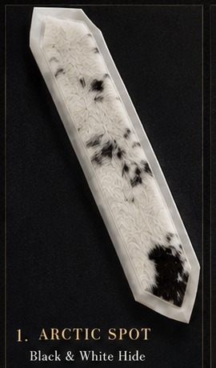
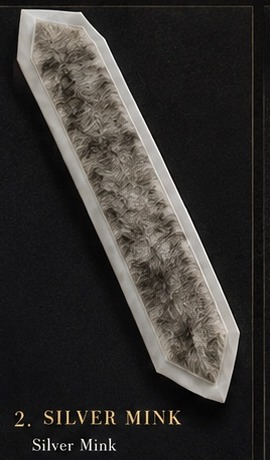
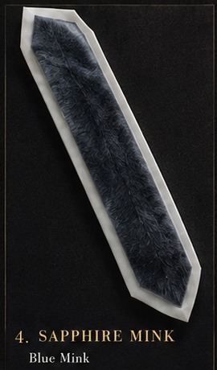
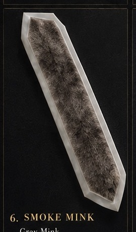
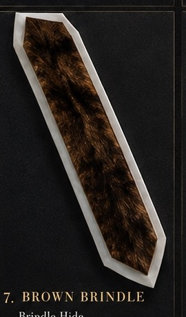
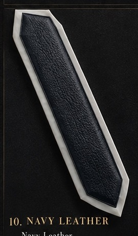

Design 01
Arctic Spot
Black & white hide
Single-piece tallis ataras in hide, low-pile mink-look textures, and leather. The material and natural pattern remain the focus.

Black & white hide

Silver mink-look hide

Black & white hide

Blue mink-look hide

Taupe mink-look hide

Grey mink-look hide

Brindle hide

Ivory mink-look hide

Chocolate leather

Navy leather